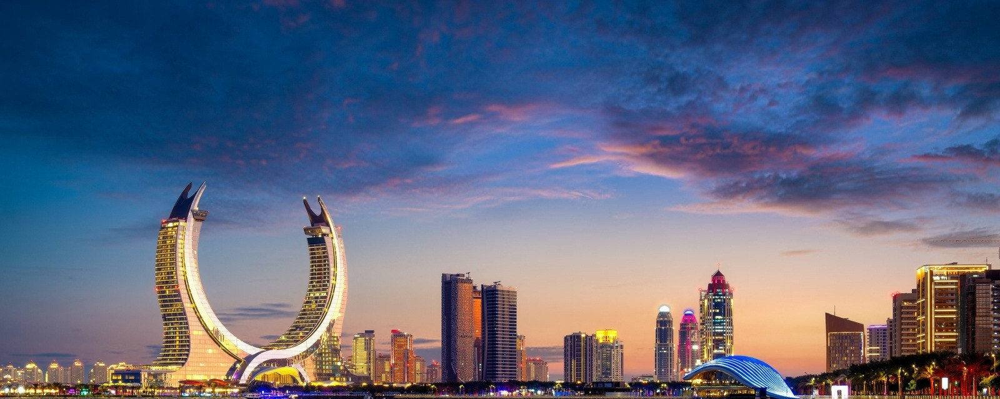

Black Ventures Capital structure et finance les projets d'énergie, d'agriculture et d'infrastructures qui construisent l'Afrique de demain — aux côtés des gouvernements et du secteur privé.
Secteurs stratégiques : énergie, agriculture, infrastructures, solutions financières alternatives
Missions permanentes : accompagnement des gouvernements et structuration financière du secteur privé
Fonds qatari entièrement dédié aux projets de développement sur le continent africain
Un pont durable entre les capitaux du Golfe et les priorités de développement africaines
Black Ventures Capital est un fonds d'investissement dédié exclusivement aux projets de développement en Afrique. Nous mobilisons du capital patient et de l'expertise de structuration pour transformer des projets ambitieux en réalisations concrètes.
Notre rôle ne s'arrête pas au financement : nous accompagnons les gouvernements dans la structuration de leurs grands projets d'infrastructure et de service public, et nous soutenons le secteur privé dans la construction de montages financiers solides, innovants et adaptés aux réalités locales.
Notre conviction est simple : l'Afrique dispose des ressources, des marchés et du capital humain nécessaires à sa transformation. Ce qui manque souvent, c'est un partenaire capable de structurer, financer et accompagner dans la durée.
Nos équipes structurent des financements sur mesure pour les projets qui répondent aux besoins essentiels du continent.
Production, transport et accès à l'énergie : projets conventionnels et renouvelables conçus pour sécuriser l'approvisionnement énergétique des territoires.
Voir le secteurChaînes de valeur agricoles, irrigation, transformation et logistique rurale, au service de la souveraineté alimentaire et de l'emploi local.
Voir le secteurRoutes, ports, transport urbain et équipements publics : les fondations physiques dont dépendent la croissance et l'intégration régionale.
Voir le secteurMécanismes de financement mixte, garanties, financements islamiques et instruments sur mesure pour des projets aux profils de risque spécifiques.
Voir le secteurNous intervenons en amont du financement, pour bâtir des projets bancables et des montages durables.
Structuration de projets d'infrastructure publique, montages en partenariat public-privé, accompagnement dans la mobilisation de financements internationaux et le dialogue avec les bailleurs.
Structuration financière de projets industriels et agricoles, montage de dette et de fonds propres, accès à des instruments de financement alternatifs adaptés à chaque marché.
Conception de montages combinant capital, dette concessionnelle et garanties, pour optimiser le coût du capital et le partage des risques entre parties prenantes.
Suivi de la mise en œuvre, gouvernance de projet et reporting d'impact, du bouclage financier jusqu'à la mise en exploitation.
Une méthode en trois temps, appliquée à chaque projet que nous accompagnons.
Nous évaluons la faisabilité technique, économique et financière du projet, et concevons un montage adapté à son contexte et à ses porteurs.
Nous engageons nos propres ressources et mobilisons des partenaires financiers complémentaires pour sécuriser le bouclage financier du projet.
Nous accompagnons la réalisation du projet dans la durée, avec un suivi rigoureux de sa performance et de son impact sur les territoires.
Analyses et prises de position de nos équipes sur les tendances qui façonnent les marchés africains.
Comment combiner capital patient, dette concessionnelle et garanties pour débloquer des projets structurants.
Les leviers de financement pour transformer le potentiel agricole du continent en filières compétitives.
Pourquoi les fonds du Golfe jouent un rôle croissant dans le financement du développement africain.
Gouvernements, institutions ou entreprises : parlons de votre projet et de la manière dont nous pouvons le structurer et le financer.